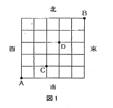
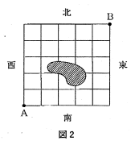
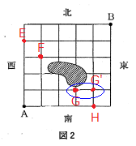
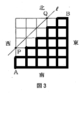
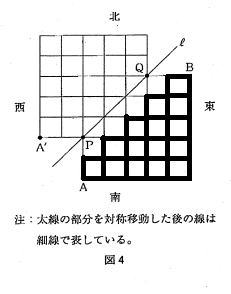
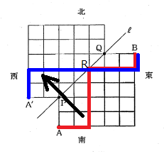

<html></html>
<head>
<meta charset="UTF-8">
<link rel="stylesheet" href="index.css">
</head>
<title>平成30年度青森県教員採用試験別解について</title>
<!-- Global site tag (gtag.js) - Google Analytics -->
<script async src="https://www.googletagmanager.com/gtag/js?id=UA-135083881-1"></script>

<script type="text/javascript" async
  src="https://cdnjs.cloudflare.com/ajax/libs/mathjax/2.7.1/MathJax.js?config=TeX-AMS_CHTML">
</script>
<style type="text/css">
div2{
  position:relative;
  text-align: center;
  top:  100px;
  font-size:x-large;
}
<div id="menu">
<ul>
<li><a href="#">ホームページ</a></li>
<li><a href="#">リスト</a></li>
<li><a href="#">日記</a></li>
<li><a href="#">掲示板</a></li>
</ul>
</div>
</style>

<body>
<h1><center>平成30年度青森県教員採用試験解答解説</center></h1>
<style>
h1{
color: #364e96;/*文字色*/
padding: 0.5em 0;/*上下の余白*/
border-top: solid 3px #364e96;/*上線*/
border-bottom: solid 3px #364e96;/*下線*/
}</style>
<div class="nav">
<ul class="nl clearFix">
<li><a href="index.html">大問1</a></li>
<li><a href="index2.html">大問2</a></li>
<li class="active"><a href="index3.html">大問3</a></li>
<li><a href="index4.html">大問4</a></li>
<li><a href="index5.html">大問5</a></li>
<li><a href="index6.html">大問6</a></li>
</ul>
</div>
<h2>3.図1のように,東西方向,南北方向にそれぞれ６本ずつ等間隔に並んだ道路をもつ町Xがある。次の(1)〜(3)に答えなさい。</h2>
(1)次の①,②の場合について,町\(X\)の地点\(A\)から地点\(B\)まで最短経路で行く方法は何通りあるか求めなさい。
<br>
<center>

</center>
\(①\)地点\(C\)を通っていく場合<br>
<br>
解.
<center>
まず\(A→C\)の行き方は<br>
(右に\(２\)マス,上に\(１\)マス,合計\(３\)マス)<br>
\begin{align*}
　　　\frac{3!}{2!1!}&=\frac{3×2×1}{(2×1)×1}\\
 &=3(通り)\\
\end{align*}
</center>
<center>
次に\(C→B\)の行き方は<br>
(右に\(３\)マス,上に\(４\)マス,合計\(７\)マス)
\begin{align*}
　　　\frac{7!}{3!4!}&=\frac{7×6×5×4×3×2×1}{(3×2×1)×(4×3×2×1)}\\
 &=35(通り)\\
\end{align*}
</center>
<center>
よって\(A→C→B\)の行き方は<br>
\begin{align*}
　　　3×35&=105(通り)\\
\end{align*}
</center>
<br>
\(②\)地点\(C\)または地点\(D\)の少なくても一方を通っていく場合。
<br>
解.
  \begin{align*}
  A→C→Bは①より105(通り)・・・(Ⅰ)\\
  同様にA→D→Bを求める。\\
  A→D→Bの行き方は\\
  \end{align*}
  <font color="000000">
    <div style="padding: 10px; margin-bottom: 10px; border: 5px double #333333;">
    \begin{align*}
      (右に3マス、上に3マス、合計6マス)\\
    　　×　　　　　　　\\
      (右に2マス、上に2マス、合計4マス)\\
      \end{align*}
  </div>
  <font color="black">

\begin{align*}
\small{\frac{6!}{3!3!}×\frac{4!}{2!2!}}&=\small{\frac{6×5×4×3×2×1}{(3×2×1)×(3×2×1)}×\frac{4×3×2×1}{(2×1)×(2×1)}}\\
 &=20×6=120(通り)・・・(Ⅱ)\\
\end{align*}
<center>
<font color="#ff0000">
\(※少なくとも一方を通っていく場合なのでCとD\)<br>
\(両方とも通る場合を引かなければならない。\)</font><br>
    \(  A→C→D→Bの行き方は\)<br>
    </center>
<font color="000000">
  <div style="padding: 10px; margin-bottom: 10px; border: 5px double #333333;">
    \begin{align*}
    (右に２マス、上に１マス、合計３マス)\\
    ×　　　　　　　\\
    (右に１マス、上に２マス、合計３マス)\\
    ×　　　　　　　\\
    (右に２マス、上に２マス、合計４マス)\\
    \end{align*}
</div>
<font color="black">
\begin{align*}
\small{\frac{3!}{2!1!}×\frac{3!}{1!2!}×\frac{4!}{2!2!}}&=\small{\frac{3×2×1}{(2×1)×1}×\frac{3×2×1}{1×(2×1)}×\frac{4×3×2×1}{(2×1)×(2×1)}}\\
 &=3×3×6=54(通り)・・・(Ⅲ)\\
\end{align*}
よって最終的な答えは(Ⅰ)+(Ⅱ)-(Ⅲ)になるので<br>
\begin{align*}
　　　105+120-54=171\\
    　　　　　\underline{\large∴171(通り)}\\
\end{align*}
</center>
<br>
<hr style="border:0;border-top:2px solid skyblue;">
(2)図\(2\)のように,町\(X\)の斜線で示された部分を通ることができないとき,地点\(A\)から地点\(B\)まで
最短経路で行く方法は何通りあるか求めなさい。（説明に図\(2\)を用いてもよい。）<br>
<center>

</center>
<br>
解.
  \begin{align*}
  \small{斜線部分を通らないAからBまで最短経路は,　　　　　　　}\\
  \small{図2で示した4地点E,F,G,Hのうちいずれか1つは必ず通る。}\\
  \end{align*}
  <center>
<br>
<font color="#ff0000"><b>※\(G\)を通った後,必ず\(G'\)を通る。</b></font><br>
<br>
(1)同様に求めていく。\(A→E→B\)の行き方は<br>
\begin{align*}
　　　1×\frac{6!}{5!1!}&=1×\frac{6×5×4×3×2×1}{(5×4×3×2×1)×1}\\
 &=6(通り)・・・(Ⅰ)\\
\end{align*}
\(A→F→B\)の行き方は<br>
\begin{align*}
　　　\frac{4!}{1!3!}×\frac{6!}{4!2!}&=\frac{4×3×2×1}{(1×(3×2×1)}×\frac{6×5×4×3×2×1}{(4×3×2×1)×(2×1)}\\
 &=4×5=60(通り)・・・(Ⅱ)\\
\end{align*}
\(A→G→G'→B\)の行き方は<br>
\begin{align*}
　　　\frac{4!}{3!1!}×1×\frac{5!}{1!4!}&=\frac{4×3×2×1}{((3×2×1)×1}×1×\frac{5×4×3×2×1}{1×(4×3×2×1)}\\
 &=4×5=20(通り)・・・(Ⅲ)\\
\end{align*}
\(A→H→B\)の行き方は<br>
\begin{align*}
　　　1×\frac{6!}{1!5!}&=1×\frac{6×5×4×3×2×1}{1×(5×4×3×2×1)}\\
 &=6(通り)・・・(Ⅳ)\\
\end{align*}
よって最終的な答えは(Ⅰ)+(Ⅱ)+(Ⅲ)+(Ⅳ)になるので<br>
\begin{align*}
　　　6+60+20+6=92\\
    　　　　　\underline{\large∴92(通り)}\\
\end{align*}
</center>
<br>
<hr style="border:0;border-top:2px solid skyblue;">
(3)図３のように,町Xにおいて地点Pと地点Qを結ぶ直線ℓ上にある地点を通ることなく,
太線で示された道路のみを通って地点Aから地点Bまで最短経路で行く
方法が何通りあるか求めたい。次の□で囲まれた内容を踏まえ,
下の①,②に答えなさい。<br>
<br>
<div style="border-style: solid ; border-width: 1px; padding: 10px 5px 10px 20px;">
　図４のように,図３を直線ℓについて対称移動し,
地点Aと直線ℓについて対称な地点をA'とすると,
図３において地点Aから地点Bまで行くすべての最短経路のうち,
直線ℓ上にある地点を少なくても１回通る経路の数は,
図４において地点A'から地点Bまで行く最短経路の数と一致する。
</div>
<center>


</center>

<br>
①上の□で囲まれた内容が正しい理由を説明しなさい。
（説明に図４を用いてもよい。）<br>
<br>
解.
<center>
<br>
\begin{align*}
\small{
\bf{  ℓ上の地点をRとする。地点A→Rの経路をℓについて\\
対称移動すると地点A'→Rの最短経路と一致する。\\
}
}
\end{align*}
\begin{align*}
\small{
\bf{
つまり地点AからRを通って地点Bに行く最短経路の1つは,\\
地点A'からRを通って地点Bに行く最短経路の1つと対応する。\\
}
}
\end{align*}
\begin{align*}
\small{
\bf{
これはRがℓ上にあるどの地点にあっても成り立つので、\\
地点A→R→Bの最短経路の数は,\\
地点A'→R→Bの最短経路の数と一致する。\\
地点A'→Bの最短経路は,ℓ上にある地点を必ず通る。\\
}
}
\end{align*}

\begin{align*}
\small{
\bf{
  よって図3において地点Aから地点Bまで行く最短経路のうち,\\
  ℓ上にある地点を少なくとも1回通る経路の数は図4において\\
  地点A'から地点Bまで行く最短経路の数と一致するといえる。\\
}
}
\end{align*}
</center>
<br>
②図\(3\)において,直線ℓ上にある地点を通ることなく,
太線で示された道路のみを通って地点\(A\)から地点\(B\)まで
最短経路で行く方法は何通りあるか求めなさい。<br>
<br>
<center>

</center>
解.
  <font color="000000">
    <div style="padding: 10px; margin-bottom: 10px; border: 5px double #333333;">
  （太線で示された道路のみを通って地点Aから地点Bまで最短経路の数）=
  （すべての最短経路の数）-（\(ℓ\)上にある地点を少なくても\(1\)回通る最短経路の数）<br>
  </div>
  <font color="black">
    <center>
すべての最短経路の数は<br>
\begin{align*}
  \frac{10!}{5!5!}&=\frac{10×9×8×7×6×5×4×3×2×1}{(5×4×3×2×1)×(5×4×3×2×1)}\\
&=252(通り)\\
\end{align*}
ある地点を少なくとも１回通る最短経路の数は①から図４において
地点A'から地点Bまで行く最短経路の数と一致するので<br>
\begin{align*}
\frac{10!}{3!7!}&=\frac{10×9×8×7×6×5×4×3×2×1}{(3×2×1)×(7×6×5×4×3×2×1)}\\
&=120(通り)\\
\end{align*}
\begin{align*}
よって求める最短経路の数は\\
　252-120=132\\
    　　　　　\underline{\large∴132(通り)}\\
\end{align*}
</center>
<br>
</body>
<p></p>
<br>
